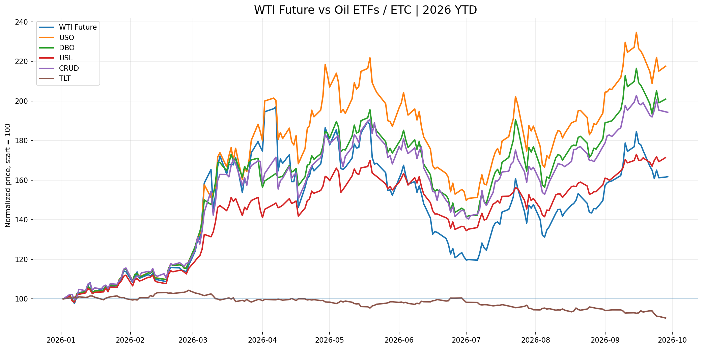
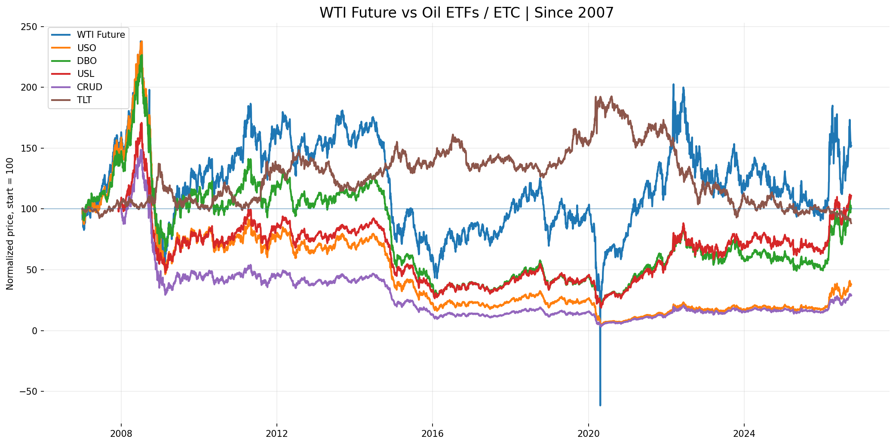
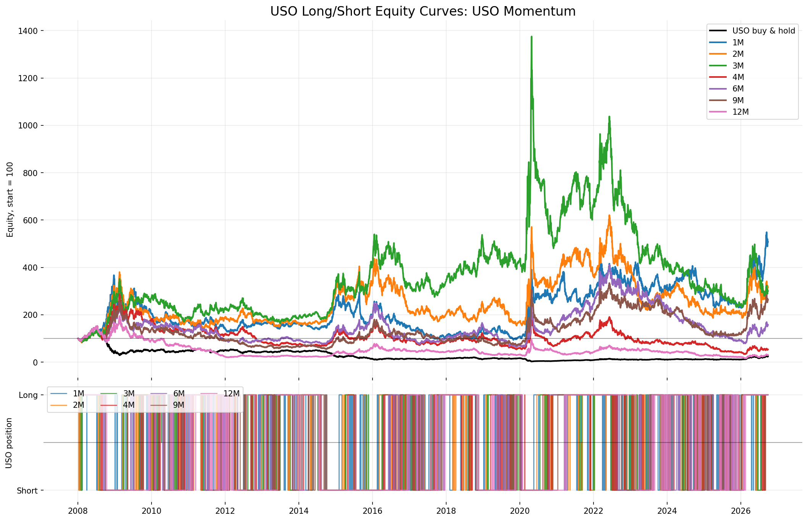
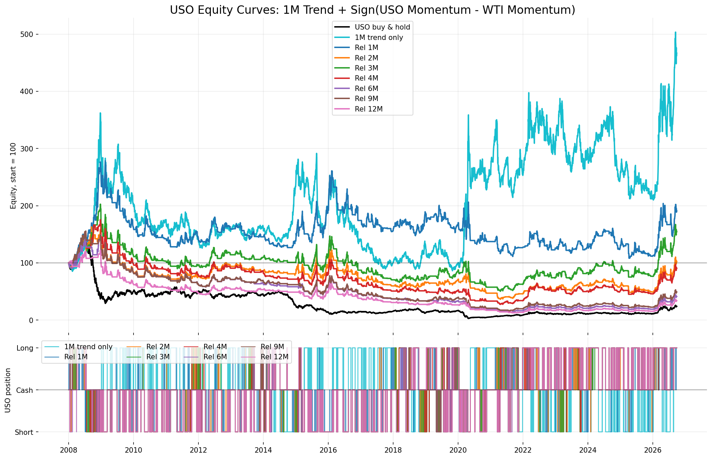

Why oil ETPs outperformed in 2026 but lag over long horizons
The 2026 divergence is not necessarily an error. A futures fund earns the
change in its contracts, the effect of rolling them and interest on its
collateral, less fees. Yahoo's CL=F history is a succession
of front-contract quotes and does not represent that complete investment return.


The return decomposition
In contango, the next contract is more expensive than the expiring contract. Repeatedly selling low and buying high creates negative roll return. In backwardation, the next contract is cheaper; a long investor can acquire more exposure when rolling, and convergence can create positive roll return. Storage, financing and insurance costs influence the curve, but they are not a fixed fee deducted directly from every ETP.
Product design explains part of the cross-section. USO concentrates on the nearby contract and is therefore especially exposed to front-end backwardation. USL spreads exposure across twelve consecutive contracts. DBO selects a contract using an optimum-yield methodology. CRUD follows a multi-tenor WTI total-return index. These are related oil exposures, not interchangeable funds.


USO trend signals are not yet convincing
We tested long/short USO positions using the sign of trailing USO momentum. Positions were delayed by one trading day and no transaction costs were charged. The grid used 1, 2, 3, 4, 6, 9 and 12 months.


| Horizon | Ending equity | CAGR | Sharpe | Max drawdown |
|---|---|---|---|---|
| 1M | 508.67 | 9.07% | 0.42 | -74.41% |
| 2M | 316.51 | 6.34% | 0.35 | -69.95% |
| 3M | 300.28 | 6.05% | 0.34 | -83.17% |
| 9M | 262.83 | 5.29% | 0.32 | -79.02% |
| 6M | 156.83 | 2.43% | 0.25 | -80.76% |
| 4M | 53.35 | -3.30% | 0.10 | -88.18% |
| 12M | 30.73 | -6.10% | 0.02 | -91.67% |
The 1M rule had the highest aggregate return, but lost 35.6% during 2014-2019. The 2M rule was less spectacular but positive in each broad subperiod. This instability, together with very deep drawdowns, argues against treating the best full-sample horizon as a settled parameter.
Adding an oil-carry proxy did not improve the strategy
The next test kept the 1M USO trend and required agreement with the sign of
USO momentum(N) - WTI momentum(N). This was intended as a rough
proxy for relative futures-product carry. It is important to be precise:
this spread is not a direct measure of contango or backwardation.
A true curve measure requires simultaneous first- and second-month contracts.


| Strategy | Ending equity | CAGR | Sharpe | Max drawdown |
|---|---|---|---|---|
| 1M trend only | 466.61 | 8.57% | 0.41 | -76.21% |
| 1M trend + relative 1M | 190.81 | 3.51% | 0.26 | -61.15% |
The filter improved the worst drawdown by roughly 15 percentage points but more than halved terminal wealth. On the evidence available, simple trend plus the USO-minus-WTI proxy is less convincing than trend alone. Direct Norgate contract-curve data is the appropriate next test for genuine roll yield.
Can USO help predict TLT?
USO and TLT often moved in opposite directions during the sample, especially in 2026. That visual relationship is economically plausible through inflation, policy-rate expectations and duration, but it is regime-dependent and does not establish causality.


Change-in-z-score weighting
For each rolling window N, prices were transformed into rolling z-scores. The daily changes in those z-scores formed an unconstrained TLT weight:
The weight observed at the close was applied to the next trading day's TLT
return. Tests used 7, 14 and 21 trading days, with lambda = 1.0
and lambda = 0.5, over two samples: since 2022 (where the idea was
found) and since 2007 (the full cached history). Reported results charge no
transaction, financing or borrow costs.


| Sample | Coefficient | Window | CAGR | Sharpe | Max drawdown | Annual turnover | Max |w| |
|---|---|---|---|---|---|---|---|
| Since 2022 | TLT B&H | - | -11.83% | -0.73 | -44.36% | - | 1.00x |
| Since 2022 | 1.0 | 7D | 14.05% | 0.74 | -23.55% | 376.91x | 3.97x |
| Since 2022 | 1.0 | 14D | 11.82% | 0.76 | -21.56% | 278.37x | 3.58x |
| Since 2022 | 1.0 | 21D | 11.73% | 0.86 | -19.44% | 233.87x | 3.27x |
| Since 2022 | 0.5 | 7D | 12.22% | 0.78 | -18.54% | 297.92x | 3.41x |
| Since 2022 | 0.5 | 14D | 10.20% | 0.80 | -16.05% | 218.05x | 2.90x |
| Since 2022 | 0.5 | 21D | 10.36% | 0.92 | -14.88% | 185.22x | 2.47x |
| Since 2007 | TLT B&H | - | -0.53% | 0.04 | -54.18% | - | 1.00x |
| Since 2007 | 1.0 | 7D | 3.96% | 0.30 | -37.73% | 377.51x | 6.02x |
| Since 2007 | 1.0 | 14D | 4.64% | 0.38 | -31.44% | 277.04x | 4.38x |
| Since 2007 | 1.0 | 21D | 5.35% | 0.48 | -28.69% | 229.66x | 4.76x |
| Since 2007 | 0.5 | 7D | 2.27% | 0.23 | -35.13% | 298.23x | 4.62x |
| Since 2007 | 0.5 | 14D | 3.34% | 0.34 | -27.71% | 218.07x | 3.94x |
| Since 2007 | 0.5 | 21D | 4.01% | 0.44 | -20.79% | 180.12x | 4.31x |
Since 2022, halving the TLT component reduced exposure, turnover and drawdown while improving Sharpe ratios. The long sample tempers that conclusion. Since 2007, Sharpe ratios fall to roughly 0.2-0.5. Coefficient 1.0 now edges coefficient 0.5 on Sharpe, while 21D keeps the best Sharpe ratio in every configuration. The signal was positive over the full history, but the 2022-2026 inflation regime supplies a large share of the return. The worst drawdowns came in multi-year flat periods (2007-2012 for the short windows, 2017-2021 for 21D at coefficient 1.0).
Methodology and limitations
- Signals are calculated at the close and applied with a one-day lag.
- All displayed strategy curves currently assume zero transaction costs.
- The cache contains Yahoo closing prices, not a fully audited total-return dataset.
- TLT distributions and interest on uninvested cash are excluded.
- Shorting and leveraged weights do not include borrow or financing costs.
CL=Fis a stitched nearby-futures quote, not a rolled total-return index.- The 2022-2026 TLT test is short and dominated by an unusual inflation and rate cycle; the 2007-2026 extension roughly halves Sharpe ratios.
- Parameters were examined on the full sample; results are exploratory and in-sample.
Next research steps
- Use adjusted total-return prices for USO and TLT.
- Acquire individual WTI contracts from Norgate and calculate the actual curve slope and roll return.
- Cap TLT signal weights at one times exposure and test 3-5 day smoothing or weekly rebalancing.
- Run walk-forward and held-out tests rather than choosing parameters on the complete history.
- Report turnover, financing, borrow and execution-cost sensitivity beside every equity curve.
Conclusion
The research supports three measured conclusions. First, oil-futures carry explains why ETPs can outperform a front-contract quote during backwardation even though they often decay over long contango-heavy periods. Second, simple USO trend and relative-momentum rules do not yet offer a stable timing model. Third, changes in USO and TLT z-scores contain an intriguing short-horizon relationship, but its apparent edge must survive realistic constraints and out-of-sample testing before it can be treated as more than a research lead.